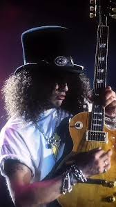

Descrição do Solo de Guitarra de Slash:
O guitarrista Slash, famoso por seu trabalho no Guns N' Roses, tem diversos solos icônicos, sendo os mais reconhecidos "Sweet Child O' Mine"****"November Rain" e "Paradise City". Seu estilo é caracterizado por melodias líricas, uso intenso da escala pentatônica menor, bluesy, bends expressivos e um tom "quente" e sustain longo, geralmente tocando uma Gibson Les Paul.
Slash - Solo de Guitarra

.O solo de guitarra do Slash é caracterizado por uma fusão única de blues, hard rock e uma forte veia melódica, focado mais no "feeling" e na construção melódica do que na velocidade pura (shredding).
Curiosidades sobre o solo de guitarra de Slash
Slash nasceu em Hampstead, Londres, em 23 de julho de 1965, e se mudou para os Estados Unidos ainda criança. Ele é conhecido por seu visual icônico, frequentemente usando um chapéu alto, óculos escuros e uma guitarra Gibson Les Paul. Slash é um dos guitarristas mais influentes e respeitados do rock, tendo sido incluído na lista dos "100 Maiores Guitarristas de Todos os Tempos" da revista Rolling Stone.
Em qual banda o Slash toca?
Slash é mais conhecido por seu trabalho como guitarrista principal da banda de hard rock Guns N' Roses, que ele cofundou em 1985. Ele também teve uma carreira solo de sucesso e tocou em outras bandas, como Velvet Revolver e Slash's Snakepit.